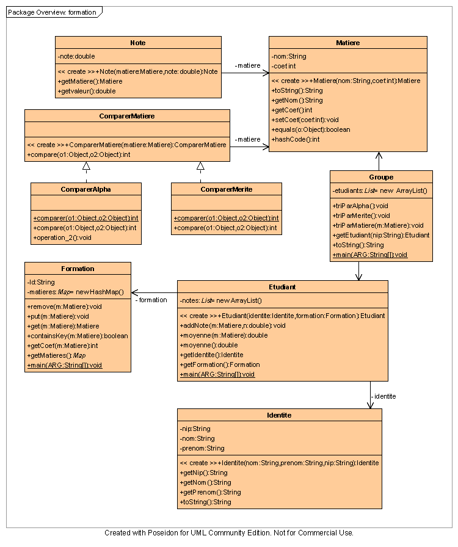

Liste d'étudiants et formation
Sujet
Texte du sujet :
USTL Licence Informatique 20062007
UE Programmation Orientée Objet
TD Collections
Exercice 1 :
Etudiants, Matières, Groupes et Formations
(
utilisation de :
java.util.Map, java.util.List, java.util.Set, java.util.Iterator,
java.util.Collections, java.util.Comparator
)
Un étudiant est caractérisé par son identité, sa formation et ses résultats. L'identité est définie par un NIP, un nom
et un prénom (3 chaînes de caractères). Les résultats d'un étudiant sont mémorisés sous la forme d'une liste de
notes par matière .
Une formation est définie par un identifiant et la liste des matières qui y sont enseignées avec leurs coefficients.
Une matière est définie par son nom.
Un groupe d'étudiants est défini par la liste des étudiants qui le compose et la formation à laquelle ce groupe
appartient.
La classe formation.Identite est définie ainsi :
formation::Identite
- nip : String
- nom : String
- prenom : String
+Identite(nip : String, nom : String, prenom :String)
+getNip():String
+getNom():String
+getPrenom():String
+toString():String
Q 1 .
Définir la classe Formation. On veut pouvoir ajouter ou supprimer une matière dans une formation. Connaître le coefficient d'une matière.
Q 2 .
Définir la classe Etudiant. Il faut pouvoir ajouter une note `a un étudiant, calculer sa moyenne pour une matière, sa moyenne générale, modifier sa formation.
Q 3 .
Définir la classe Groupe. On doit pouvoir ajouter, supprimer un étudiant du groupe, calculer la moyenne du groupe pour une matière, la moyenne générale.
Q 4 .
Pour la classe Groupe : on veut pouvoir trier les étudiants du groupe selon différents critères. Et donc avoir des méthodes triParMerite, triAlpha, triParMatière qui retournent la liste des étudiants du groupe triée selon leur moyenne générale décroissante, leur ordre alpha croissant, leur moyenne dans une matière croissante.
Masquer UML :

Une des nombreuses correction possible
le fichier jar :
ici
pour exécuter l'appli graphique : java -jar Formation.jar
pour décompresser l'archive jar :
jar xvf
Formation.jar
observez aussi le fichier compile.bat dans le répertoire batch (jar décomprimé)